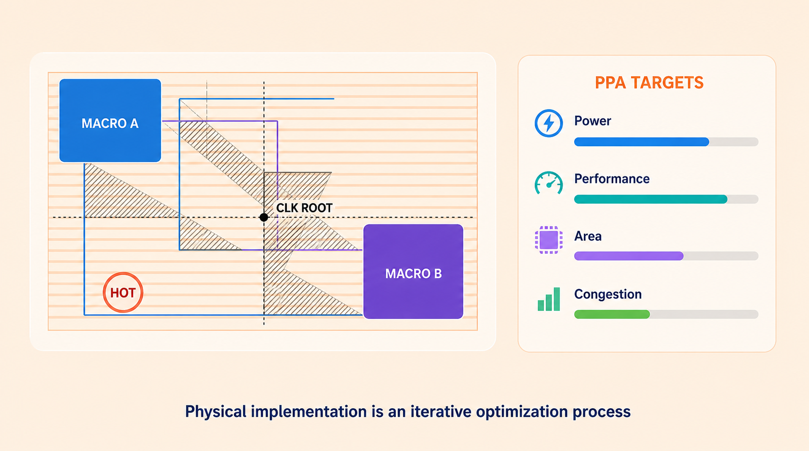
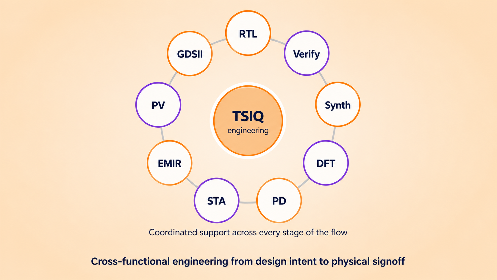

IMPLEMENTATION
Physical Design & PPA Optimization
We support digital implementation from netlist through physical closure, with attention to performance, power, area, congestion and manufacturability. The focus is not only on running the flow, but on understanding why a design is failing and identifying practical optimization paths.


Physical implementation is an iterative optimization process
Implementation scope
- Floorplanning and power planning
- Placement optimization
- Congestion analysis
- Clock-tree synthesis
- Routing and post-route optimization
- ECO implementation
Problems we address
- Setup and hold violations
- High congestion
- PPA degradation
- Clock skew challenges
- Routing and physical violations
Client deliverables
- Implementation reports
- Timing and congestion analysis
- Optimization recommendations
- ECO updates
- Closure status
Engineering outcomeA structured implementation path toward improved PPA, reduced violations and predictable physical closure.